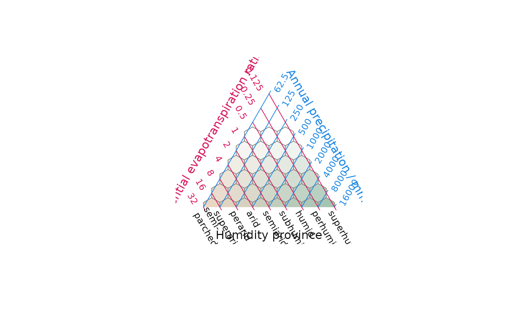
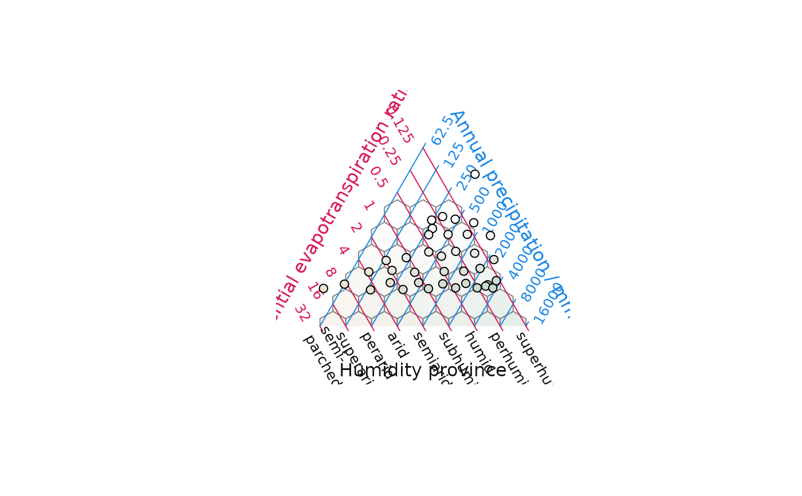

Convert a point in evapotranspiration-precipitation space to an appropriate cross-blended hypsometric colour
Source:R/Holdridge.R
HoldridgeHypsometricCol.RdUsed to colour HoldridgeHexagons(), and may also be used to aid the
interpretation of PET + precipitation data in any graphical context.
Arguments
- pet, prec
Numeric vectors giving potential evapotranspiration ratio and annual precipitation (in mm).
- opacity
Opacity level to be converted to the final two characters of an RGBA hexadecimal colour definition, e.g.
#000000FF. Specify a character string, which will be interpreted as a hexadecimal alpha value and appended to the six RGB hexadecimal digits; a numeric in the range 0 (transparent) to 1 (opaque); orNA, to return only the six RGB digits.
Value
Character vector listing RGB or (if opacity != NA)
RGBA values corresponding to each PET-precipitation value pair.
References
Palette derived from the hypsometric colour scheme presented at Shaded Relief.
See also
Other Holdridge plotting functions:
AddToTernary(),
HoldridgePlot(),
holdridge,
holdridgeClasses
Examples
HoldridgePlot(hex.col = HoldridgeHypsometricCol)

VeryTransparent <- function(...) HoldridgeHypsometricCol(..., opacity = 0.3)
HoldridgePlot(hex.col = VeryTransparent)
pet <- holdridge$PET
prec <- holdridge$Precipitation
ptCol <- HoldridgeHypsometricCol(pet, prec)
HoldridgePoints(pet, prec, pch = 21, bg = ptCol)
